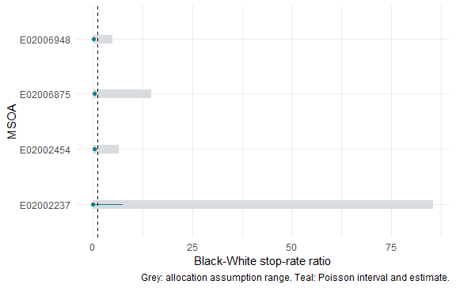

Estimating disparity with explicit assumptions
Source:vignettes/estimating-disparity.Rmd
estimating-disparity.RmdThis vignette is precomputed from bundled public records, Census populations and verified geography. Package checks need no network. The four example MSOAs are the areas with the most records in the May-July 2026 West Yorkshire sample; this selection illustrates methods and does not represent England and Wales.
Events, reporting coverage and exposure
A stop is an event, not a unique person. A person may contribute several events. No analysis creates a population-minus-stops cell. Self-defined ethnicity and officer-defined ethnicity describe different measurements and remain separate.
sl_counts() keeps force and month as reporting strata. A
submitted zero is zero; an absent force-month is NA. Use
months and forces to narrow the source
coverage grid explicitly. Filtering by an event characteristic does not
change the number of months during which those events could have been
observed. The units mapping supplies areas with no events,
and the full sample includes this mapping in its contract. Without one,
the area universe is observed areas.
For population P and m submitted months, exposure E = P * m / 12
person-years. The annualised event rate is 1,000 * n / E.
period_rate is the separately named rate n / P * 1,000 for
the observed cell. Missing submission months contribute neither events
nor exposure time. Suspected partial submissions need scrutiny; their
recorded counts are not estimates of unreported events.
ratios <- sl_rate_ratio(rates)
knitr::kable(ratios[c("geography_code", "ratio", "conf_low", "conf_high",
"n_reference", "n_comparison", "dispersion")], digits = 3)| geography_code | ratio | conf_low | conf_high | n_reference | n_comparison | dispersion |
|---|---|---|---|---|---|---|
| E02002237 | 0.000 | 0.000 | 7.451 | 18 | 0 | NA |
| E02002454 | 0.201 | 0.005 | 1.157 | 72 | 1 | 2.396 |
| E02006875 | 0.281 | 0.057 | 0.833 | 196 | 3 | 2.957 |
| E02006948 | 0.147 | 0.039 | 0.390 | 84 | 4 | 0.500 |
These are Black-White stop-rate ratios, not
person-level probability ratios. They come from a Poisson count model
with a log exposure offset and ethnicity indicator. Confidence intervals
are exact conditional Poisson intervals. Dispersion is a Pearson
residual diagnostic, not a correction for denominator or
missing-ethnicity assumptions. With replicated cells,
method = "quasipoisson" estimates dispersion;
method = "negbin" estimates extra count variation. Neither
turns residence into the population exposed to police activity.
For a pooled regression with additional covariates,
sl_count_model() accepts an explicit formula and exposure
column. A population offset uses submitted months to form
population-time. Optional random effects use lme4; residual Moran
diagnostics require compatible boundaries and remain exploratory.
model <- sl_count_model(rates, n ~ ethnicity + factor(geography_code))
knitr::kable(as.data.frame(model), digits = 3)| term | estimate | std_error | statistic | p_value | exp_estimate | conf_low | conf_high |
|---|---|---|---|---|---|---|---|
| (Intercept) | -6.758 | 0.306 | -22.116 | 0.000 | 0.001 | 0.001 | 0.002 |
| ethnicityBlack | 0.974 | 0.418 | 2.329 | 0.020 | 2.650 | 1.167 | 6.016 |
| ethnicityMixed | -16.173 | 1414.463 | -0.011 | 0.991 | 0.000 | 0.000 | Inf |
| ethnicityOther | 1.404 | 0.357 | 3.931 | 0.000 | 4.073 | 2.022 | 8.205 |
| ethnicityWhite | 2.636 | 0.235 | 11.222 | 0.000 | 13.957 | 8.807 | 22.118 |
| factor(geography_code)E02002454 | 1.113 | 0.235 | 4.745 | 0.000 | 3.043 | 1.922 | 4.820 |
| factor(geography_code)E02006875 | 2.049 | 0.216 | 9.501 | 0.000 | 7.758 | 5.084 | 11.838 |
| factor(geography_code)E02006948 | 2.488 | 0.229 | 10.872 | 0.000 | 12.034 | 7.685 | 18.845 |
attr(model, "excluded")
#> $rows
#> [1] 12
#>
#> $events
#> [1] 358Missing ethnicity changes the estimand
Unknown ethnicity is kept in the numerator table and has no Census population denominator. If R and C are the recorded reference and comparison counts and U are Unknown events, extreme ratio bounds are
L = (C/E_C) / ((R+U)/E_R)
H = ((C+U)/E_C) / (R/E_R)These bounds allocate every Unknown to one of the pair. Proportional allocation uses all known ethnicity groups. MAR by force and object assumes missingness is independent of ethnicity conditional on those variables; it cannot be evaluated if object grouping has been discarded or a required stratum has no known records. Allocating pooled force/object shares to individual areas also assumes those shares describe each recipient area’s unknown records. MAR by force/object alone does not guarantee this when local ethnicity composition varies. The tipping allocation assumes the fraction q of U goes to the comparison group and the remainder goes to the reference. Values outside [0,1] cannot tip the ratio.
bounds <- sl_missing_ethnicity_bounds(counts, population)
knitr::kable(bounds[c("geography_code", "scenario", "ratio", "unknown",
"lower_bound", "upper_bound", "tipping_allocation")], digits = 3)| geography_code | scenario | ratio | unknown | lower_bound | upper_bound | tipping_allocation |
|---|---|---|---|---|---|---|
| E02002237 | all_to_reference | 0.000 | 47 | 0.000 | 85.533 | 0.041 |
| E02002237 | all_to_comparison | 85.533 | 47 | 0.000 | 85.533 | 0.041 |
| E02002237 | proportional | 0.000 | 47 | 0.000 | 85.533 | 0.041 |
| E02002237 | force_object_mar | 0.486 | 47 | 0.000 | 85.533 | 0.041 |
| E02002454 | all_to_reference | 0.141 | 31 | 0.141 | 6.438 | 0.184 |
| E02002454 | all_to_comparison | 6.438 | 31 | 0.141 | 6.438 | 0.184 |
| E02002454 | proportional | 0.201 | 31 | 0.141 | 6.438 | 0.184 |
| E02002454 | force_object_mar | 0.232 | 31 | 0.141 | 6.438 | 0.184 |
| E02006875 | all_to_reference | 0.158 | 153 | 0.158 | 14.609 | 0.099 |
| E02006875 | all_to_comparison | 14.609 | 153 | 0.158 | 14.609 | 0.099 |
| E02006875 | proportional | 0.281 | 153 | 0.158 | 14.609 | 0.099 |
| E02006875 | force_object_mar | 0.362 | 153 | 0.158 | 14.609 | 0.099 |
| E02006948 | all_to_reference | 0.058 | 127 | 0.058 | 4.805 | 0.383 |
| E02006948 | all_to_comparison | 4.805 | 127 | 0.058 | 4.805 | 0.383 |
| E02006948 | proportional | 0.147 | 127 | 0.058 | 4.805 | 0.383 |
| E02006948 | force_object_mar | 0.106 | 127 | 0.058 | 4.805 | 0.383 |
Sampling uncertainty is conditional on a recorded-count model. The assumption range asks what different allocations would imply. They are displayed separately and are never combined into one interval.

Denominator scenarios require comparable cells
Residence is one possible exposure definition. Workday, visitor and mobility exposures require independent justification and compatible geography and ethnicity definitions. There is no built-in workday exposure in version 0.1.0. The example below deliberately doubles the Black exposure as a transparent hypothetical scenario; it is not a measured mobility adjustment.
hypothetical <- as.data.frame(population)
hypothetical$population[hypothetical$ethnicity == "Black"] <-
hypothetical$population[hypothetical$ethnicity == "Black"] * 2
hypothetical <- sl_exposure(hypothetical, geography = "msoa21",
source = "Hypothetical double Black exposure; not measured data")
denominators <- sl_denominator_scenarios(counts,
list(resident = population, hypothetical = hypothetical))
knitr::kable(denominators[c("geography_code", "scenario", "ratio",
"conf_low", "conf_high", "lower_bound", "upper_bound")], digits = 3)| geography_code | scenario | ratio | conf_low | conf_high | lower_bound | upper_bound |
|---|---|---|---|---|---|---|
| E02002237 | resident | 0.000 | 0.000 | 7.451 | 0.000 | 0.000 |
| E02002454 | resident | 0.201 | 0.005 | 1.157 | 0.101 | 0.201 |
| E02006875 | resident | 0.281 | 0.057 | 0.833 | 0.140 | 0.281 |
| E02006948 | resident | 0.147 | 0.039 | 0.390 | 0.073 | 0.147 |
| E02002237 | hypothetical | 0.000 | 0.000 | 3.725 | 0.000 | 0.000 |
| E02002454 | hypothetical | 0.101 | 0.003 | 0.579 | 0.101 | 0.201 |
| E02006875 | hypothetical | 0.140 | 0.029 | 0.417 | 0.140 | 0.281 |
| E02006948 | hypothetical | 0.073 | 0.020 | 0.195 | 0.073 | 0.147 |
Direct age-sex standardisation
RM032 provides Census 2021 ethnicity by age and sex at MSOA and LSOA. Combining published bands gives under 25, 25-34 and 35+, matching a common partition of police age bands. Equating police-recorded gender with Census sex is an explicit measurement assumption. Unknown age, gender and ethnicity appear in exclusion diagnostics, rather than being recoded to a known category.
The same age-sex weights apply to every ethnicity group. For stratum h, weights w_h sum to one and the standardised rate is 1,000 * sum_h w_h n_h/E_h. A stratum with positive weight and zero exposure prevents direct standardisation. Sampling intervals combine exact stratum Poisson intervals using a Bonferroni correction; they are conservative and treat Census weights as fixed. Different Census tables may differ slightly because of disclosure control.
demographic <- readRDS(data_file("example-demographic-counts.rds"))
crosstab <- readRDS(data_file("sample-crosstab.rds"))
standardised <- sl_standardise(demographic, crosstab)
knitr::kable(standardised[c("geography_code", "ethnicity", "crude_rate",
"standardised_rate", "complete_strata", "excluded_events")], digits = 2)| geography_code | ethnicity | crude_rate | standardised_rate | complete_strata | excluded_events |
|---|---|---|---|---|---|
| E02002237 | Asian | 4.69 | 3.40 | TRUE | 47 |
| E02002237 | Black | 0.00 | 0.00 | TRUE | 47 |
| E02002237 | Mixed | 0.00 | 0.00 | TRUE | 47 |
| E02002237 | Other | 83.33 | 67.65 | TRUE | 47 |
| E02002237 | White | 12.71 | 12.95 | TRUE | 47 |
| E02002454 | Asian | 1.58 | 1.19 | TRUE | 35 |
| E02002454 | Black | 0.00 | 0.00 | TRUE | 35 |
| E02002454 | Mixed | 0.00 | 0.00 | TRUE | 35 |
| E02002454 | Other | 12.94 | 10.24 | TRUE | 35 |
| E02002454 | White | 48.12 | 47.96 | TRUE | 35 |
| E02006875 | Asian | 12.63 | 38.25 | TRUE | 164 |
| E02006875 | Black | 34.88 | 44.62 | TRUE | 164 |
| E02006875 | Mixed | 0.00 | 0.00 | TRUE | 164 |
| E02006875 | Other | 24.69 | 12.77 | TRUE | 164 |
| E02006875 | White | 118.25 | 163.29 | TRUE | 164 |
| E02006948 | Asian | 8.78 | 7.61 | TRUE | 142 |
| E02006948 | Black | 15.12 | 12.61 | TRUE | 142 |
| E02006948 | Mixed | 0.00 | 0.00 | TRUE | 142 |
| E02006948 | Other | 39.80 | 48.74 | TRUE | 142 |
| E02006948 | White | 181.60 | 201.86 | TRUE | 142 |
The test suite separately reproduces a worked two-age example. A group with monthly counts 18 and 1 and populations 900 and 100 has an annual crude rate of 228 per 1,000. Equal standard weights give 180 per 1,000. These are different population summaries; standardisation does not establish a causal disparity.
Rankings need uncertainty, too
eligible <- ratios$n_reference > 0 & ratios$n_comparison > 0
knitr::kable(ratios[!eligible, c("geography_code", "n_reference", "n_comparison")],
caption = "Excluded from plug-in bootstrap: a group has zero events")| geography_code | n_reference | n_comparison |
|---|---|---|
| E02002237 | 18 | 0 |
ranks <- sl_ranking_stability(ratios[eligible, ], n = 200, seed = 2026)
knitr::kable(as.data.frame(ranks))| geography_code | median_rank | rank_low | rank_high | effective_draws | method |
|---|---|---|---|---|---|
| E02002454 | 2 | 1 | 3 | 200 | bootstrap |
| E02006875 | 1 | 1 | 3 | 200 | bootstrap |
| E02006948 | 2 | 1 | 3 | 200 | bootstrap |
| area_a | area_b | probability_a_higher | stable |
|---|---|---|---|
| E02002454 | E02006875 | 0.350 | FALSE |
| E02002454 | E02006948 | 0.522 | FALSE |
| E02006875 | E02006948 | 0.767 | FALSE |
The bootstrap simulates counts from the fitted count models. A quasi-Poisson fit does not define a sampling distribution and cannot be used for this bootstrap. A zero observed group count makes a plug-in bootstrap degenerate; use an appropriate posterior model for those cases. Draws where both group counts are zero have no defined rate ratio and are reported as omitted. Rank probabilities and pairwise ordering are conditional on the stated model, population and recording assumptions. An apparent league table is not evidence that every pair of areas differs.
Validation and limits
The release missingness study runs 20 independent 25-area simulations for each combination of MCAR, force-dependent MAR and ethnicity-dependent MNAR, at baseline missing probabilities 0.1, 0.3 and 0.6. The complete realised event ratio is known before ethnicity is hidden. Its containment is an algebraic check of the extreme allocations, not a claim about coverage of a latent generating rate ratio.
missingness_path <- system.file("validation", "missingness-summary.csv",
package = "searchlight")
missingness <- utils::read.csv(missingness_path)
knitr::kable(missingness[c("mechanism", "missing_rate", "replications",
"realised_containment", "generating_containment", "mean_median_width")],
digits = 3)| mechanism | missing_rate | replications | realised_containment | generating_containment | mean_median_width |
|---|---|---|---|---|---|
| mar | 0.1 | 20 | 1 | 0.776 | 2.545 |
| mar | 0.3 | 20 | 1 | 0.906 | 8.916 |
| mar | 0.6 | 20 | 1 | 0.994 | 26.989 |
| mcar | 0.1 | 20 | 1 | 0.768 | 1.045 |
| mcar | 0.3 | 20 | 1 | 0.992 | 3.772 |
| mcar | 0.6 | 20 | 1 | 1.000 | 12.333 |
| mnar | 0.1 | 20 | 1 | 0.754 | 0.875 |
| mnar | 0.3 | 20 | 1 | 0.988 | 2.403 |
| mnar | 0.6 | 20 | 1 | 1.000 | 5.525 |
The mean of replicate median widths describes an assumption range on
the ratio scale. Infinite-width frequency and Monte Carlo uncertainty
remain in the saved validation tables. Force/object proportional
reallocation also assumes that the pooled known composition transports
to each area. Even MAR within force does not make that composition
spatially homogeneous. See inst/scripts/missingness-study.R
and its manifest for seeds, area-level evidence and scenario error
summaries.
Known-answer tests cover event counts exceeding population, missing months, exact zero-count intervals, analytical allocation bounds and tipping shares, direct standardisation, and rank probability sums. Public sample diagnostics also flag missing coordinates and systematic snap-point proximity to boundaries. These checks do not establish that a causal interpretation is appropriate.
Methods use the R Core GLM
documentation, exact
Poisson test documentation, and MASS
negative-binomial documentation. Source tables, licences and
vintages are recorded in inst/NOTES/data_sources.md.